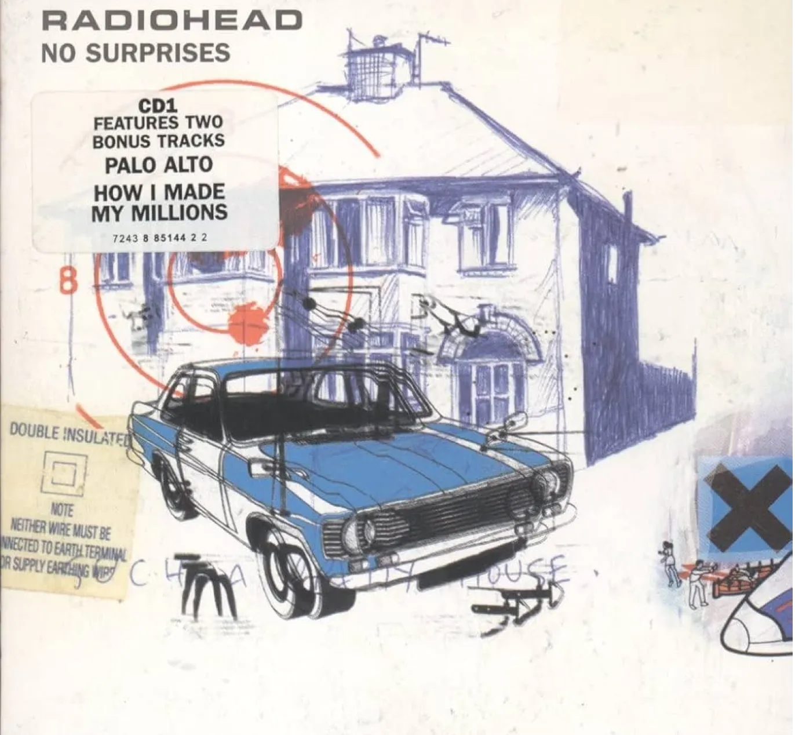

The importance of technology.
Published on 24/10 by Léo BAUDRY. Estimated reading time :2 min
Welcome to "SilentAge" !
Deep-dive in a world that is both fascinating and terribly frightening :
a world devoid of all technology.
Find out more about this catastrophic scenario by reading the articles below :
Items presentation
Rediscover the objects that have helped humanity to become what it is today, and on which the craziest technologies are based…

“The Day the Earth Stood Still” by Robert Wise
Robert Wise's “The Day the Earth Stood Still”(1951) was a very important, even cult, film of its time… READ MORE

George Miller : a visionary director
George Miller, director of Mad Max, revolutionised the post-apocalyptic genre by exploring a world without technology…

“The Road” by Cormac McCarthy
Cormac McCarthy's The Road is considered a classic novel, depicting a dramatic struggle for survival in a post-apocalyptic world...READ MORE
“No Surprises” by Radiohead : OK Computer album (1997)
Find out how Radiohead are discreetly but effectively expressing their displeasure with "hyper-technologisation" through their music...

Read more